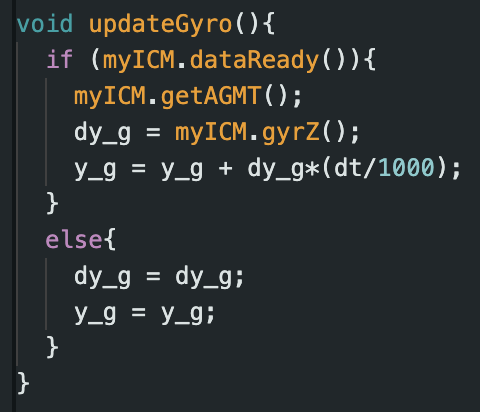
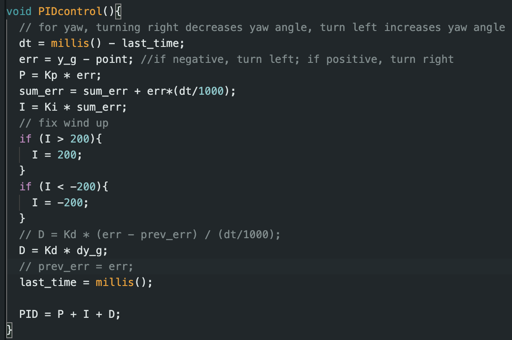
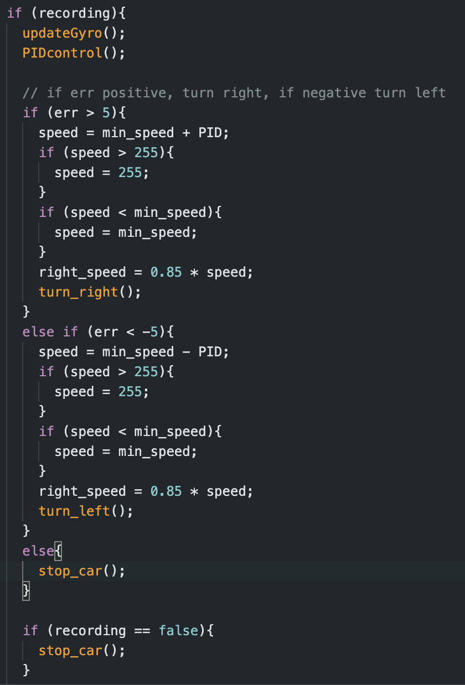
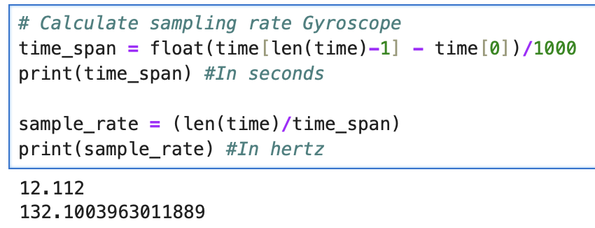
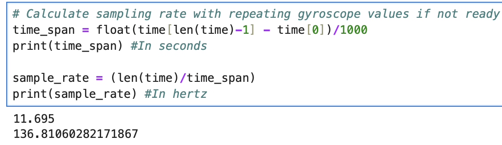
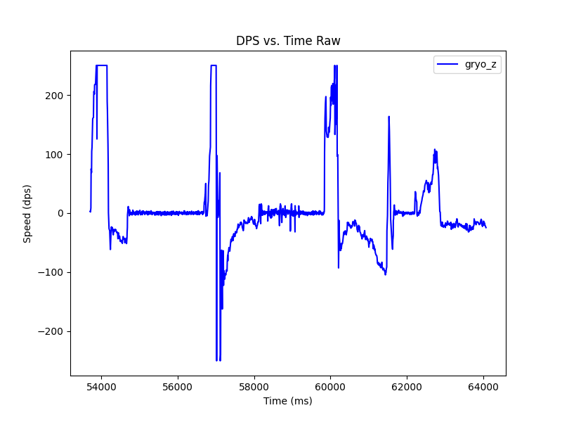
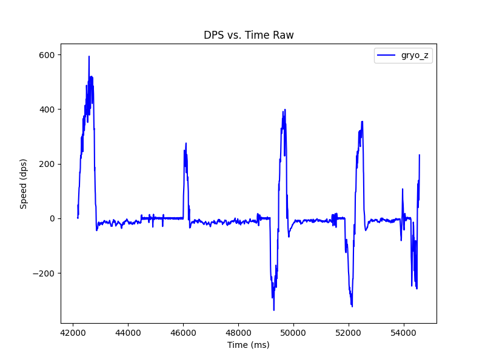

The goal of this lab is to implement a variation of PID control on orientation. We will use the IMU to control the yaw of the robot.
The goal of the prelab was to setup debugging for the PID controller and setup basic PID control. The same debugging mechanism as lab 5 was used. We simply modify the PID controller to have a set point that was an angle rather than distance. With our debugging system, we can still (same as lab 5) update the set point in real time. We can also process Bluetooth commands while the control loop is running.
The PID controller was much like the one in lab 5, but the derivative component was modified. To get the yaw angle, we integrate the IMU reading. This suggests that the IMU reading is a rate of change (derivative), itself, so we can directly use that in the derivative component of the PID controller. We also had to create a function to update the yaw angle readings. If a new reading is not available (i.e the clock speed is faster than the IMU refresh), we will use the previous yaw angle in our control.
 To find our values of Kp, Ki, and Kd, we followed similar procedures to lab 5. We found Kp = 0.4, Ki = 0.1, Kd = 0.2. We control the car by adding or subtracting the PID value from the min_speed and bound the value based on our motor range as well:
We updated our motor input range and conversion ratio because for turning, it seems a higher min speed was needed. The min speed went from 55 to 140. The conversion ratio for the right motor speed was also increased from 0.8 to 0.85. This was necessary to keep the car more stationary while changing its orientation.
We tested the sampling rate of just the gyroscope by waiting for new gyroscope readings before continuing PID control vs. repeating gyroscope readings if its not ready. We found that the gyroscope sampling rate did not limit (or marginally limited) the sampling rate of the control loop.
 An issue with the IMU readings is that it tends to drift. There are no other sensors being used to calculate yaw, so sensor fusion is not an option. For future labs, if we are using orientation control to make turns, we can account for drift by setting the current orientation to 0 degrees and then turning left or right by 90 degrees. This would minimize drift each time we turned.
The default max rotational velocity(degrees per second) of the gyroscope is 250 dps. We changed it to 1000 to hit the upper limits of the values the RC car was outputing.
 We ran 1 trial of having the RC get pushed and correct to the desired orientation. The robot struggled a bit due to the material of the table, but when it was tested on the lab floor, it worked well. We also had a trial with changing the setpoint while the PID controller was active. There was no derivative kick issue.